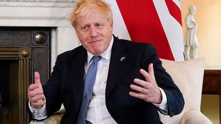

С 211 голосами «за» и 148 «против» «премьер» Борис Джонсон пережил вотум недоверия, выдвинутый повстанцами из Консервативной партии, глубоко разделенной влиянием «Партигейта». Несмотря на победу в голосовании среди 359 депутатов-консерваторов и хотя технически для нового голосования должен был пройти год, Джонсон остался в очень скомпрометированном положении, когда почти половина избирателей его собственной партии высказалась за о его отставке.
Так называемый «Юбилейный переворот» завершился в этот понедельник, когда президент парламентского комитета 1922 года Грэм Брэди подтвердил, что превышен потолок в 54 депутата (15%), призывая к смене руководства в Консервативной партии. Брэди проинформировал Джонсона, и они договорились как можно скорее назначить голосование.
Джонсон провел весь день, пытаясь заручиться поддержкой достаточного количества депутатов. В последней попытке предотвратить мятеж «премьер» лично защитил свое пребывание на этом посту перед парламентской комиссией. Консервативный лидер сделал особый акцент на своей способности побеждать на выборах и хвастался тем, что в декабре 2019 года добился крупнейшей победы партии на выборах за 40 лет.
«Сейчас самое время», — призвал лидер исполнительной власти своих верных депутатов, одновременно подчеркнув, что «братоубийственная война» «тори» может служить ключами от Даунинг-стрит на блюде лидеру оппозиции. лейборист Кейр Стармер.
Согласно «Таймс», Джонсон также сказал депутатам, что «я бы сделал это снова», имея в виду свое присутствие на вечеринках Covid на Даунинг-стрит, которые он сам снова и снова определял как «рабочие мероприятия», несмотря на то, что был оштрафован полицией на 118 евро. Позиция «премьера», полуизвиняющегося и не проявляющего достаточного раскаяния перед избирателями, послужила причиной, по которой несколько депутатов оправдали свою поддержку вотума недоверия.